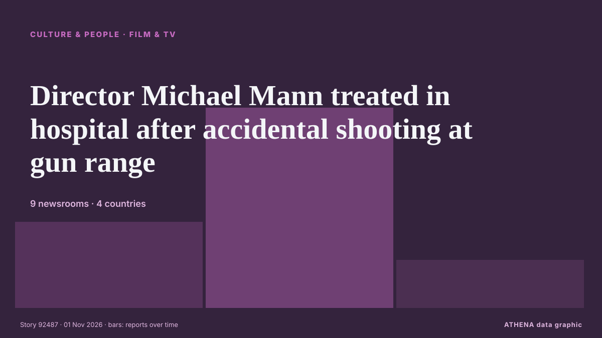

Κινηματογράφος & τηλεόραση
| 19 Οκτ | 0 |
|---|---|
| 20 Οκτ | 0 |
| 21 Οκτ | 0 |
| 22 Οκτ | 0 |
| 23 Οκτ | 0 |
| 24 Οκτ | 0 |
| 25 Οκτ | 0 |
| 26 Οκτ | 1 |
| 27 Οκτ | 2 |
| 28 Οκτ | 0 |
| 29 Οκτ | 4 |
| 30 Οκτ | 4 |
| 31 Οκτ | 5 |
| 1 Νοε | 3 |
Οι τίτλοι των ειδήσεων παρουσιάζονται στα αγγλικά, όπως δημοσιεύτηκαν.

Director Michael Mann treated in hospital after accidental shooting at gun range
The incident reportedly took place during a training session at the Los Angeles range on Saturday. από Evening Standard (London)
Inde Navarrette Takes Swipe at Shane Gillis During ‘SNL’ Monologue
Following a Trump-centric cold open that featured the return of Tom Hanks’ David S. από Variety
Indian Filmmaker Sanjay Gupta Dies: ‘Kaante’ Director Was 57
Sanjay Gupta, the Indian director best known for the crime drama films Kaante and Shootout at Lokhandwala, died Friday, October 30, after a fall at his home in Mumbai. από Deadline
Test your Halloween movie knowledge with our spooky quiz
It's officially spooky season! But how well do you really know your slashers? από ABC News Australia
2026 Daytime Emmy Awards: ‘General Hospital’ Wins Best Daytime Drama
'The Kelly Clarkson Show' won a leading five awards, as 'Beyond the Gates' also took home four trophies. από The Hollywood Reporter
Fallon Sherrock speaks out after criticism over £501,000 Luke Littler win
The Netflix show saw Luke Littler take on a number of amateur contestants who were trying win £501,000. από Liverpool Echo
Angel Studios CCO Lays Out “Values-Based” Initiative Banning Sex, Nudity, F-Words & “Misuse Of God’s Name”: “Hollywood Lives In A Bubble”
Angel Studios, the production company behind Sound of Freedom, Cabrini, His Only Son and The... από The Citizen (Tanzania)
‘Time is the fire in which we burn’: 2 major cast losses rock the passionate ‘Star Trek’ universe
One of the countless memorable lines that have tumbled out of the “Star Trek” universe over the years is this gem, originally from a 20th-century poet named Delmore Schwartz: “Time is the fire in… από The Canadian Press (via CityNews)
Before captain, a king: The dramatic life of Patrick Stewart
Before he shot to Star Trek superstardom, a young Patrick Stewart toured Australia as an ensemble actor. από ABC News Australia
Walter Koenig, Star Trek’s Chekov, dies at 90
Walter Koenig, the actor best known for his role as Pavel Chekov on the groundbreaking television show Star Trek and in the franchise’s first seven movies, has died at age 90, his... από Oman Observer
‘Eetha’ trailer: Shraddha Kapoor plays legendary tamasha artist Vithabai Narayangaonkar
Laxman Utekar’s Hindi film also stars Siddharth Jadhav, Randeep Hooda and Mohammed Zeeshan Ayyub. από Scroll.in
Elke Sommer, German-born star of ‘A Shot in the Dark’ and ‘The Prize,’ dies at 85
Elke Sommer, the German actor known for her roles in 1960s Hollywood comedies and espionage films, has died at 85. από The Independent
Mediacorp's Deepavali 2026: Live countdown, movies, Little India events and more
From the live Amarkala Deepavali countdown and social media drama specials to celebrations and concerts in Little India, here's what to watch and where to join the festivities. από CNA (Channel NewsAsia)
European Film Festival Returns to Riyadh for Fifth Edition with 16 Films
RIYADH: The fifth edition of the European Film Festival in Riyadh will feature 16 films from 16 European countries, the Delegation of the European Union to Saudi Arabia has announced. από Arab News
Harry Potter TV series casts Lily Potter, James Potter and Charlie Weasley
The HBO adaptation of the children’s fantasy novels by JK Rowling will be released later this year. από The Irish News (Belfast)
Tiger Shroff Firing Case Updates: 3 Suspects Undergo Medical Examination In Kota, Transit Remand Granted
Tiger Shroff Firing Case Updates: Tiger Shroff sustained injuries on his shoulder, chest and his right arm. από NDTV
What to read before you go see that new documentary on Elizabeth Holmes
Ahead of "You Can See Everything" hitting theaters, let's rewind the last decade and review some of the most significant news tied to Elizabeth Holmes, who was convicted in 2022… από STAT News